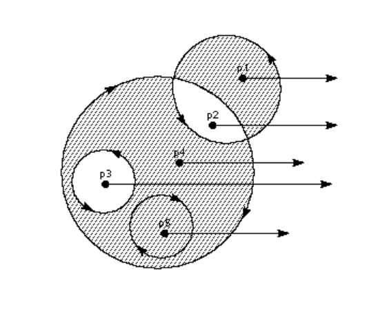

I use the library found online to load a TrueType font file (.ttf) and then write a Bezier curve rasterizer to display them.
The user can upload their own font and content to be typed. The result will be saved as a .png file in the same directory.
Each glyph in the .ttf file is described by a sequence of points in order. Two on-curve points construct a staright line and the additional off-curve point between two on-curve points construct a parabolic curve as shown in the image below.
These curves connected together forms the ouline of the glyph, which may contain one contour (e.g. character C) or several contours (e.g. character B).
In order to do the rasterization, a new algorithm is used to distinguish whether a pixel is inside or outside the outline of a glyph.

For each single pixel, choose one direction randomly and create a ray starting from this pixel. Start with a count of zero. If the ray intersects with a clockwise contour, add one; otherwise, subtract one.
If the final count number is not zero, this pixel is an interior point; otherwise, it is an exterior one.
The problem I encountered is to make an interface. I studied the source code provided in the project 2 and learned the complete logic of creating the Viewer but struggled to convert c++ code to c because the library and skeleton code I found online is written in c language.
The lessons I learned from this project are new library exploration and time management. I spent lots of time on learning the TrueType font engine and stb library, which caused there was limited time left when I noticed I had to convert the interface code from .cpp to .c. Although the result of this project is not as satisfied as I expected, I learned a lot from it and I will continue with the interface in the next several weeks to refine it.
|
|
|